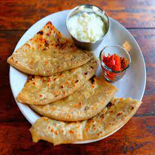

Paratha

Description
Aloo paratha is a paratha stuffed with potato filling native to the Indian subcontinent. It is traditionally eaten for breakfast. It is made using unleavened dough rolled with a mixture of mashed potato and spices which is cooked on a hot tawa with butter or ghee.
These flavorful and delicious stuffed Parathas are a staple in many North Indian homes, Dhabas & restaurants. These are most commonly topped with white butter and served alongside Pickle and Yogurt.
Ingredients
- wheat flour and water,for kneading
- 2 tablespoon oil
- 2 nos green chillies finely chopped
- salt
- spices
- potato / aloo, boiled & mashed
- Ghee / Oil
- 1/2 teaspoon chat masala powder
Steps
- Make dough with wheat flour and let it rest for 10 minute
- Take mashed potatoes in a large bowl and put spices and green chillies and onion and mix it well
- Now pinch a ball sized dough and roll about 4 inches in diameter.
- Place a ball sized prepared aloo stuffing in the centre.
- Take the edge and start pleating bringing it to the centre.
- Also join the pleats together and secure tight pinching off excess dough.
- Sprinkle some wheat flour and roll slightly thick.
- On a hot tawa place the rolled paratha and cook for a minute.
- Furthermore, flip the paratha when the base is partly cooked (after a minute).
- Also, brush oil / ghee and press slightly. flip again once or twice till both the sides are cooked properly.
- Finally, serve hot aloo paratha with sauce, curd/raita or pickle.